The brief
Design and manufacture a product
The project brief was open: design and manufacture a functional object consisting of at least two CNC-machined components, with full responsibility for CAD modelling, CAM setup, toolpath generation, and physical fabrication from raw stock.
Concept development
From brainstorm to shuriken
Initial ideation came from two places — writing ideas while exploring campus, and rapid sketching of concepts and variations. Several directions were explored before landing on the spinning jewellery holder.
A two-tier spinning display inspired by the shuriken shape from Naruto, with a brass central rod and topper connecting two aluminium tiers
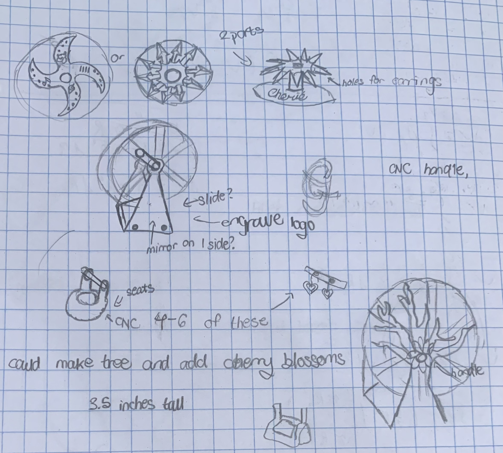
sketch-1.png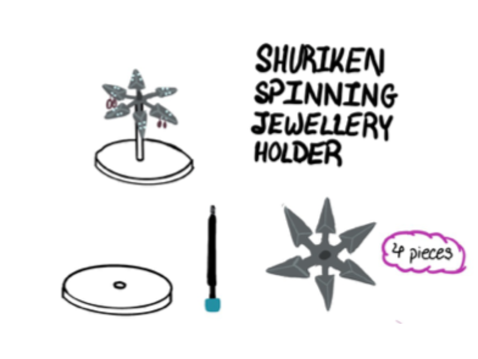
CAD modelling
Built in Fusion 360
The product consisted of four components — two aluminium parts machined on the CNC and two brass parts turned on the lathe. Soft jaws were also modelled in CAD to enable accurate CAM simulations and ensure secure workholding during the two-hour CNC machining process.
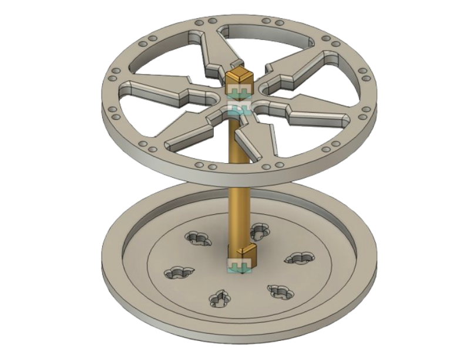

Manufacturing & fabrication
From raw stock to finished parts
Manufacturing began by turning an aluminium block down to a 4-inch diameter on the lathe. Two aluminium soft jaws were then machined to act as the workholding method, preventing movement of circular components under tool pressure.
Lathe turning — aluminium disc & CNC milling - workholding pieces
Raw aluminium block turned down to 4-inch diameter. Custom soft jaws machined to hold circular parts securely during subsequent CNC operations.
CNC milling — shuriken
Shuriken-shaped top component milled with a flipped setup using rods to achieve a symmetrical finish on both faces.
CNC milling — base plate
Base plate milled to achieve a more rounded base and intricate cloud patterns inspired by the "Akatsuki".
Lathe turning — brass rod & topper
Central rod and decorative topper turned from brass bar stock. The brass provides both structural connection between tiers and a visual contrast against the aluminium.
Finishing — sanding & assembly
All components were sanded to remove sharp edges and residual burrs, ensuring the object was safe to handle. Parts assembled with the brass rod as the central axis and the topper holding everything in place while allowing for a smooth spin.
Process photography — raw to finished:
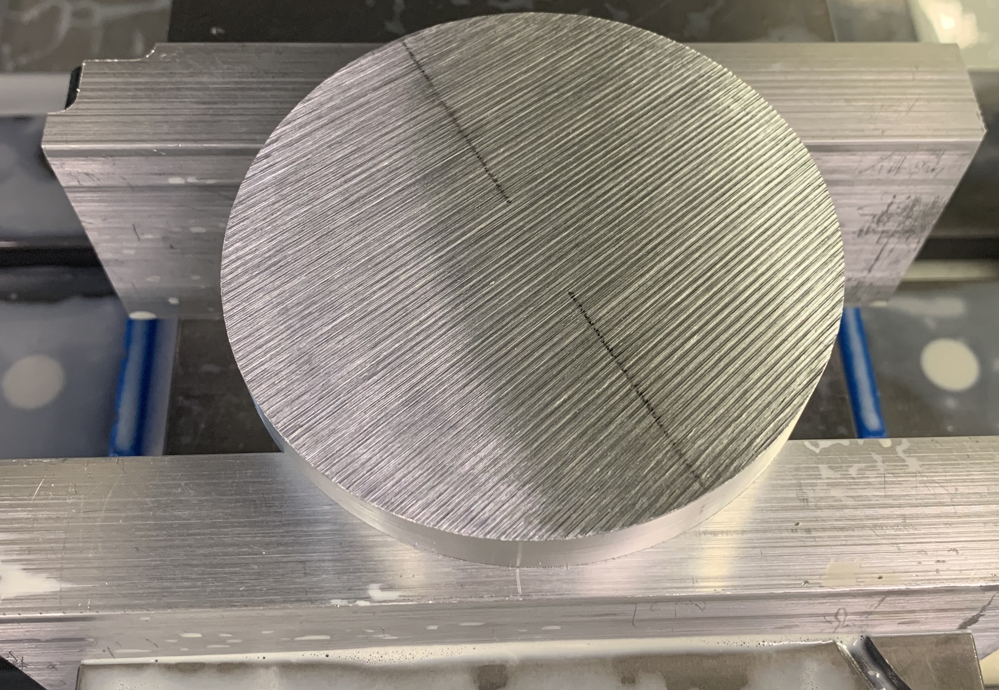
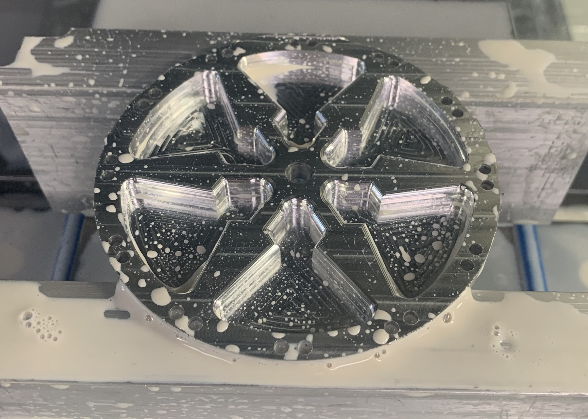
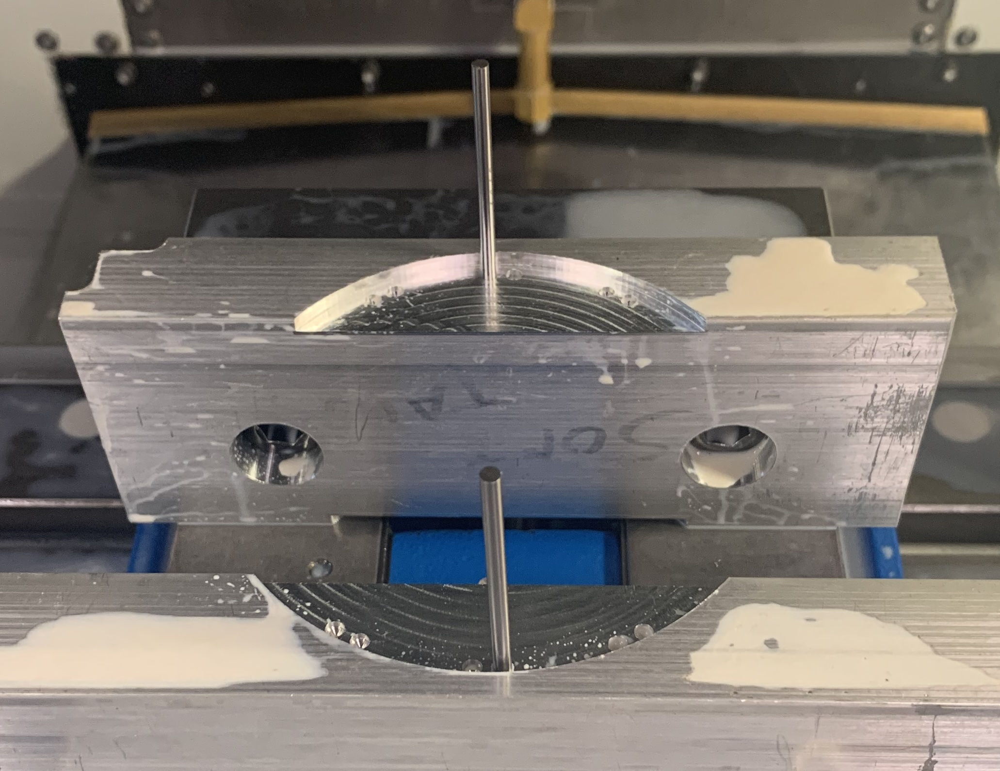
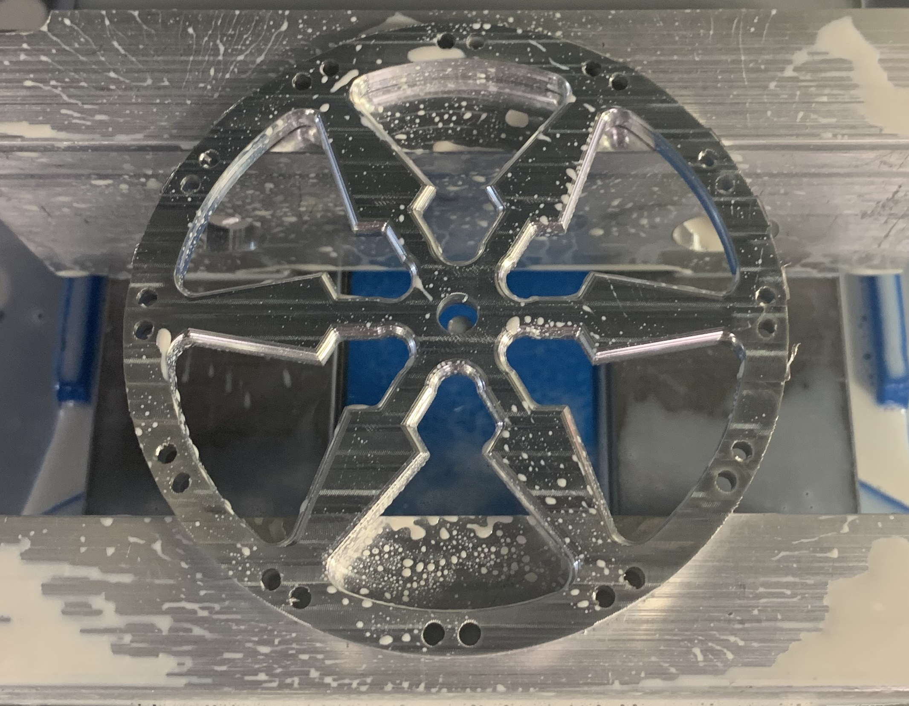
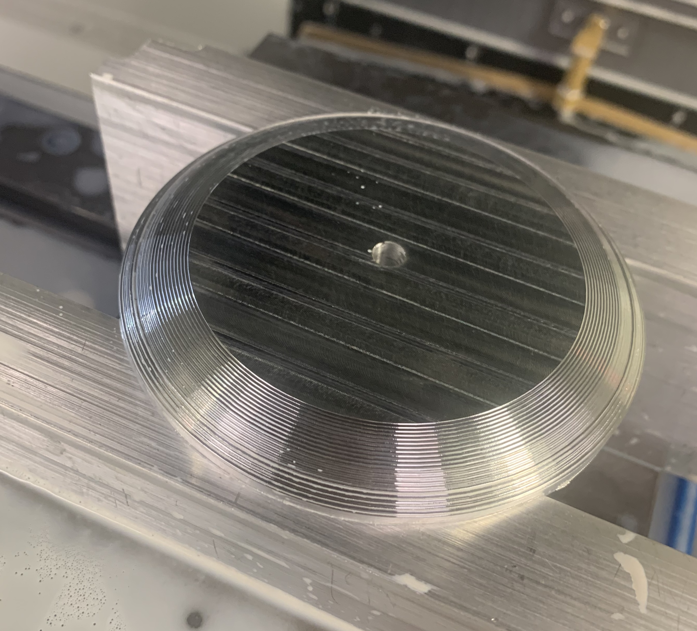
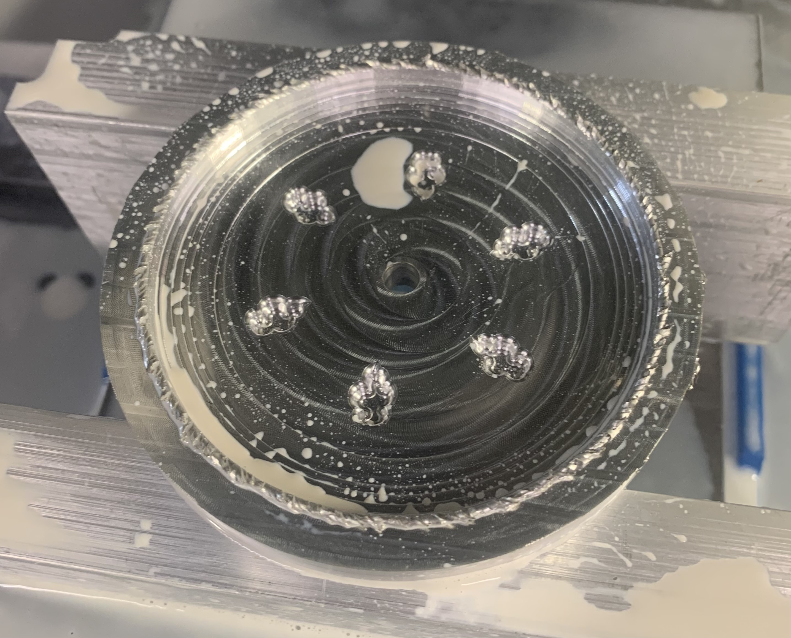
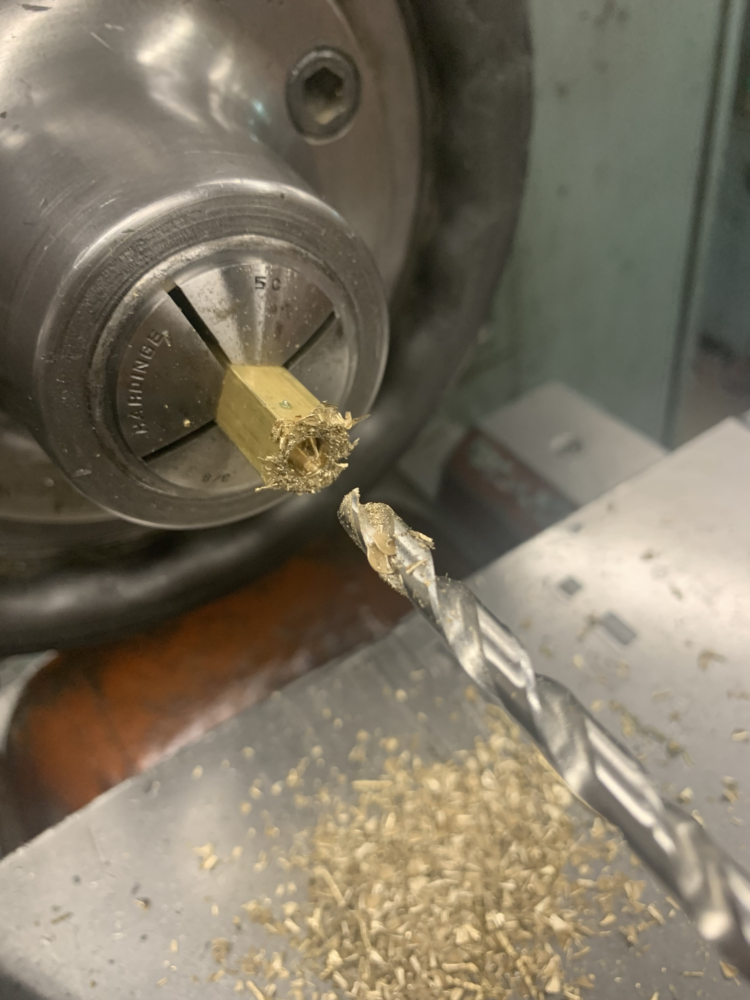
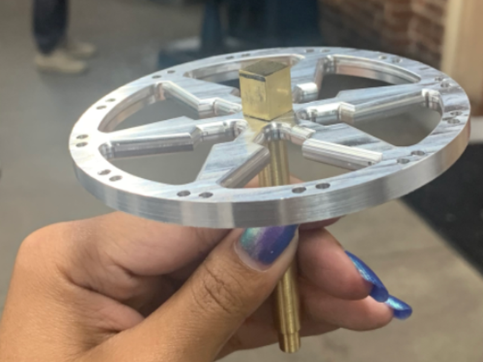
Final result
The finished piece
All four components assembled — two spinning aluminium tiers on a brass central rod, with the shuriken plate on top and the disc base below. The piece functions as a jewellery display with holes in the top for mounting earrings, space along the shuriken "blades" for necklaces and the base functions as a ring/bracelet storage.

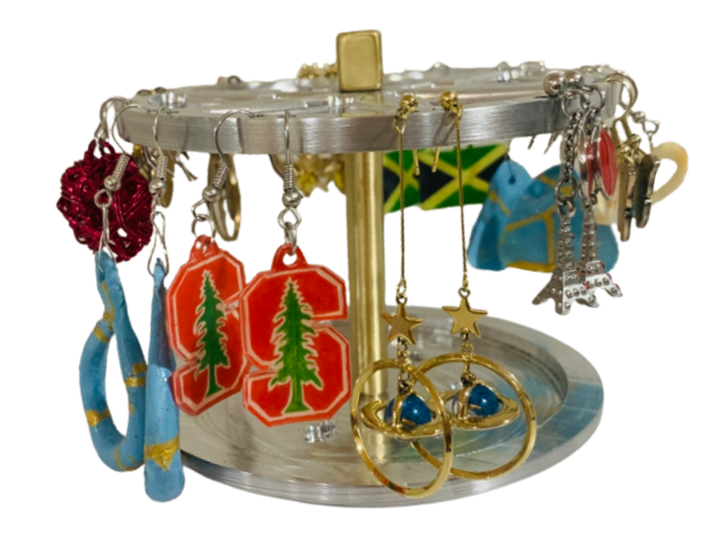